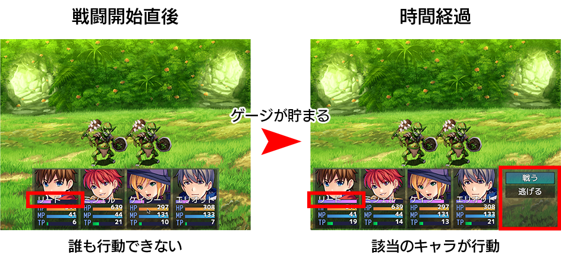

RPG TKOOL MZ HELP
RPGツクールMZとは

タイムプログレス戦闘
RPGツクールMZでは、従来のターン制の戦闘方式に加え、タイムプログレス戦闘に変更できます。
タイムプログレス戦闘とは？
タイムプログレス戦闘は、ゲージを満たしたキャラクターから順次行動します。
各アクターにはTPゲージが表示されます。TPゲージは徐々にたまり、100％になったアクターから順次戦闘行動を選択します。
行動後はTPゲージは0になり、再度TPゲージがたまっていきます。

タイムプログレス戦闘に切り替える方法
タイムプログレス戦闘を採用する場合は、データベースの［システム1］から設定します。
詳しくは［システム1］→［戦闘システム］項目をご覧ください。